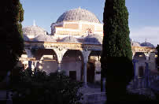
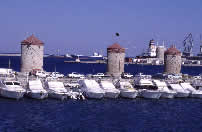

|
|
Vous
trouverez ici la description de nos itinéraires préférés
sous forme de balades thématiques. Un conseil : à
Rhodes, la chaleur est telle en période estivale qu'il est
préférable d'effectuer ses visites en matinée
et en soirée.
Si vous souhaitez plutôt créer vos propres promenades,
utilisez le plan interactif !
Rhodes est divisée
en deux parties : la cité des chevaliers ou vieille ville
et la ville nouvelle construite au-delà des remparts médiévaux.
1)
Au temps des chevaliers
Départ
: le Pyli Agias Aikaterinis - Arrivée : Palais des Grands
Maîtres |
| |
Après
l'épisode byzantin jusqu'en 1309, l'île est conquise
par les hospitaliers de Saint Jean de Jérusalem. Fondé
au XIe siècle, l'ordre participe à la première
croisade avant de se réfugier à Chypre à
la chute de Jérusalem en 1291. Ils achètent
l'île de Rhodes à un pirate génois quelques
années plus tard. C'est aux chevaliers que l'on doit
la fortification de Rhodes et la construction du Palais des
Grands Maîtres, un véritable bijou de l'architecture
militaire médiévale ! |
|
Jetez un
œil sur la fontaine médiévale de la place centrale Ippokratous
avant de rejoindre la rue des Chevaliers (Odos Ippoton). Vous
pourrez découvrir les sept auberges gothiques de l'ordre de
Saint Jean, bâties au XIVe siècle. La ville était en effet
gouvernée par un élu devant gérer les sept " nationalités
" divisant la ville : France, Italie, Angleterre, Allemagne,
Provence, Espagne et Auvergne. Chacune d'entre elle est reconnaissable
par l'écusson apposé sur la façade du bâtiment. |
|
|
|
Au bout
de la rue, vous arrivez au Palais des Grands Maîtres où vous
pouvez commencer la visite des remparts. Attention, seuls
quelques mètres sont ouverts au public, de la porte d'Amboise
à la porte Koskinou mais ils sont suffisant pour faire vos
plus beaux clichés de l'ancienne ville où se démarque très
facilement les différents quartiers.Construite sur les vestiges
antiques de Rhodes, l'imposante muraille est l'œuvre des Chevaliers
qui renforcèrent ainsi le dispositif défensif de l'île contre
les éventuelles invasions turques. |
|
Mais
auparavant, nous vous suggérons la visite du fort. Ne manquez
surtout pas la salle de la Méduse et la cour centrale ainsi
que les mosaïques hellénistiques de la salle des neuf muses.
Deux
expositions sont présentées dans l'enceinte du Palais :
la première consacrée à la Rhodes Antiques réunit une collection
impressionnante issue des fouilles archéologiques et la
seconde, Rhodes médiévale, vous emporte dans la vie quotidienne
au Moyen Age. |
|
 |
Cet
itinéraire peut se terminer aux alentours de la rue Epicharmou,
charmant mélange de ruelles médiévales et d'architecture byzantine.
Et si vous en demandez encore, faîtes étape à Notre-Dame de
la Victoire et glanez dans les ruelles aux arcs-boutants,
vous pourrez encore croiser d'autres vestiges médiévaux parsemés
ici et là comme cette fontaine médiévale.
|
2)
Balade turque
Départ : Murad Reis - Arrivée : Ibrahim Pacha
|
| Notre seconde
balade porte sur l'architecture religieuse ottomane. Il existe
14 mosquées à Rhodes dont celle de Soliman le Magnifique,
construite en 1523 et marquant la victoire du Sultan sur l'île.
Malheureusement, cette dernière est fermée au public pour
restauration depuis quelques années. |
|
 |
Nous vous
conseillons de partir de la Mosquée de Murad Reis dans la
ville nouvelle. Facilement repérable grâce à son minaret,
la mosquée possède un cimetière turc où est enterré Mourad-Reis,
commandant pirate de la flotte de Soliman.
Rejoignez ensuite
les Mosquées Mustafa, Rejep Pacha et Ibrahim Pacha, construite
en 1531 et dont l'intérieur est simplement splendide ! |
Terminez votre
promenade par le musée byzantin établi dans une église du XIe
siècle devenue la cathédrale des chevaliers avant d'être elle-même
une mosquée. Il réunit une superbe collection d'icônes et de fresques.
3)
La ville nouvelle (nea chora)
|
La nouvelle
ville ne présente pas un grand intérêt pour les touristes. Nous
vous proposons simplement de faire quelques emplettes au marché
(nea agora) tout en appréciant la vie quotidienne des Rhodiens
et de vous promenez sur le port de Mandraki où était sensé avoir
été construit le fameux colosse. Haute de 32 mètres, la statue
de bronze, dressée en 305 av. J.C, d'après les plans de Charès
de Lindos, devait marquer la victoire des Rhodiens sur le roi
de Macédoine Démétrios Poliorcète. Après 12 ans de construction,
le colosse fut détruit par un tremblement de terre et les débris
vendus quelques siècles plus tard à un marchand juif d'Ephèse.
Traditionnellement représenté enjambant le port de Mandraki, il
apparaît que la statue trouva plutôt sa place sur l'actuel site
du palais des Grands Maîtres.
| La biche,
symbole de la ville de Rhodes, et le cerf gardent l'entré
du port où le colosse a la réputation d'avoir été construit.
Au bout de la jetée se tient le fort Saint-Nicolas défendant
la ville des premiers assauts et servant aujourd'hui de phare. |
|
 |
A la jonction
de l'ancienne et nouvelle Rhodes, le port de Mandraki est
un port de plaisance, anciennement utilisé par les chevaliers
pour amarrer leurs galères.
D'ici, vous pourrez partir en excursion pour les îles voisines
ou même pour la Turquie. |
| Le marché est
très animé et donne un aperçu intéressant de la culture rhodienne.
C'est l'occasion de goûter à quelques spécialités et de faire
le plein de fruits pour la journée ! |
|
 |
Les 3 moulins
de Mandraki servaient autrefois à broyer le grain pour la
cargaison des navires. Aujourd'hui, les ailes tournent toujours
au gré du vent mais les moulins n'ont plus aucune activité. |
La
cité hellénistique
Pour vous
rendre sur le Mont Smith, louez un vélo à Rhodes ou prenez le
bus. Il vous permettra de poursuivre jusqu'au parc de Rodini à
3 km de la ville où se situait l'école rhétorique.
La cité hellénistique se compose des ruines du temple d'Apollon,
détruit par un tremblement de terre, du stade et du théâtre, tous
deux restaurés. Le parc de Rodini permet de se rafraîchir à l'ombre
de ses nombreux cyprès et platanes. Une nécropole dorienne se
trouve à quelques mètres.
Le quartier
juif
Même si vous
avez peu de temps, il serait dommage de ne pas faire un tour par
l'ancien quartier juif. Par la rue Aristotélous, rejoignez la
place des Martyrs qui doit son nom à la déportation des résidents
juifs pendant la deuxième guerre mondiale. Une rue plus loin,
vous tomberez sur la synagogue. Le quartier juif n'est pas riche
en visite mais très paisible pour une agréable promenade.
|